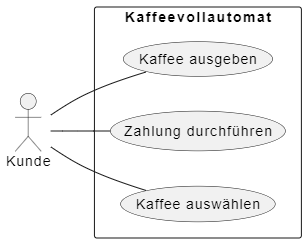
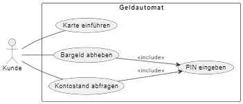
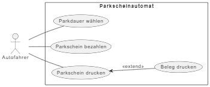
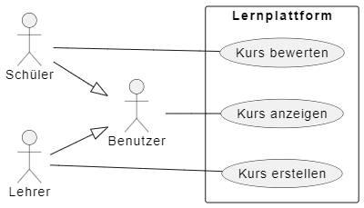

Definition
Ein Anwendungsfalldiagramm (Use-Case-Diagramm) stellt dar, welche Funktionen ein System aus Sicht der Nutzer (Akteure) bereitstellt.
Zweck & Verwendung
- Anforderungsanalyse: Identifikation und Beschreibung von Systemfunktionen
- Kommunikation: Gemeinsames Verständnis zwischen Fachbereich und Entwicklung
- Abgrenzung: Klare Systemgrenze und Verantwortlichkeiten
Praxisrelevanz
- Schnelle Erfassung der wichtigsten Use Cases
- Basis für User Stories und Testszenarien
- Übersichtliche Darstellung komplexer Systeme
Grundelemente
- Akteur: Externe Entität (Person, System)
- Anwendungsfall: Funktion oder Dienst, den das System für den Akteur bereitstellt
- Systemgrenze: Rahmen, der das betrachtete System abgrenzt
Beispiel Grundelemente

- Beziehungen:
- Kommunikation (Linie Akteur ↔ Use Case)
- Include („<include>“): Wiederverwendbarer gemeinsamer Ablauf
- Extend („<extend>“): Optionaler Ablauf
- Generalisierung: Vererbung zwischen Use Cases oder Akteuren
Beispiel Beziehungen
Include

Extend

Generalisierung

OOP-Bezug
Use Cases bilden oft Methoden bzw. Services ab, die in Klassendiagrammen und Implementierung verarbeitet werden.
Links
- Ralph Steyers Videos zum Anwendungsfalldiagramm
- Wikipedia: Anwendungsfalldiagramm
- PlantUML
- UML-Startseite